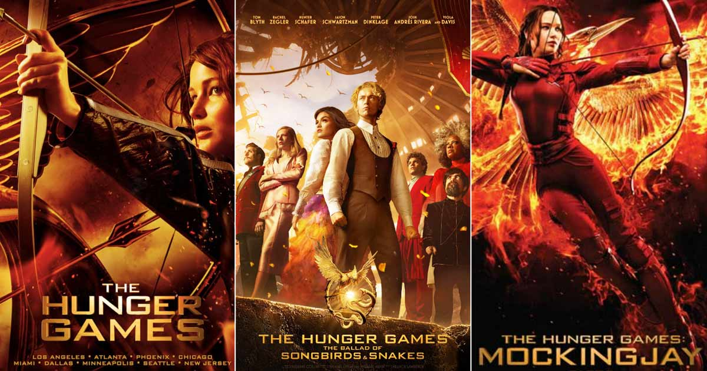

My favorite movie is the Hunger Games.
The Hunger Games is a 2012 American dystopian action film directed by Gary Ross, who co-wrote the screenplay with Suzanne Collins and Billy Ray, based on the 2008 novel of the same name by Collins. It is the first installment in The Hunger Games film series. The film stars Jennifer Lawrence, Josh Hutcherson, Liam Hemsworth, Woody Harrelson, Elizabeth Banks, Lenny Kravitz, Stanley Tucci, and Donald Sutherland. In the film, Katniss Everdeen (Lawrence) and Peeta Mellark (Hutcherson) are forced to compete in the Hunger Games, an elaborate televised fight to the death consisting of adolescent contestants from the 12 Districts of Panem.

"May the odds be ever in your favor."
Suzanne Collins not only wrote a trilogy which turned into four movies, but also a prequal.
The Hunger Games is the 20th-highest-grossing film franchise of all time, having grossed over $3.3 billion worldwide.
| Hunger Games | Catching Fire |
|---|---|
| 2012 | 2013 |